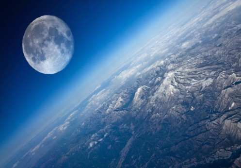

Місяць - природний супутник нашої планети
Він п'ятий за величиною та най унікальніший природний супутник планет Сонячної системи.

Його необхідно вивчати та досліджувати, адже це небесне тіло, що за космічними мірками, знаходиться на неймовірно близькій до нас відстані. Місяць контролює нашу планету і сприяє тому, щоб на ній були комфортні умови для існування всього живого.
Він впливає на Землю: на її погоду, землетруси, приливи і відпливи, а також впливає на кожного з нас: на наше самопочуття, настрій, активність, схильність до правопорушень, стан нервової системи.
З усіх небесних тіл Місяць досліджений найкраще.
Він має кулясту форму. Перший і єдиний позаземний об'єкт природного походження, на якому побувала людина. Середня відстань між центрами Землі і Місяця — 384 467 км.
Місяць ще з доісторичних часів привертав увагу людей змінами фаз та затемненнями. Зміну місячних фаз ми спостерігаємо тому, що Місяць обертається навколо Землі і навколо своєї осі з однаковим періодом, який становить 29,5 діб.